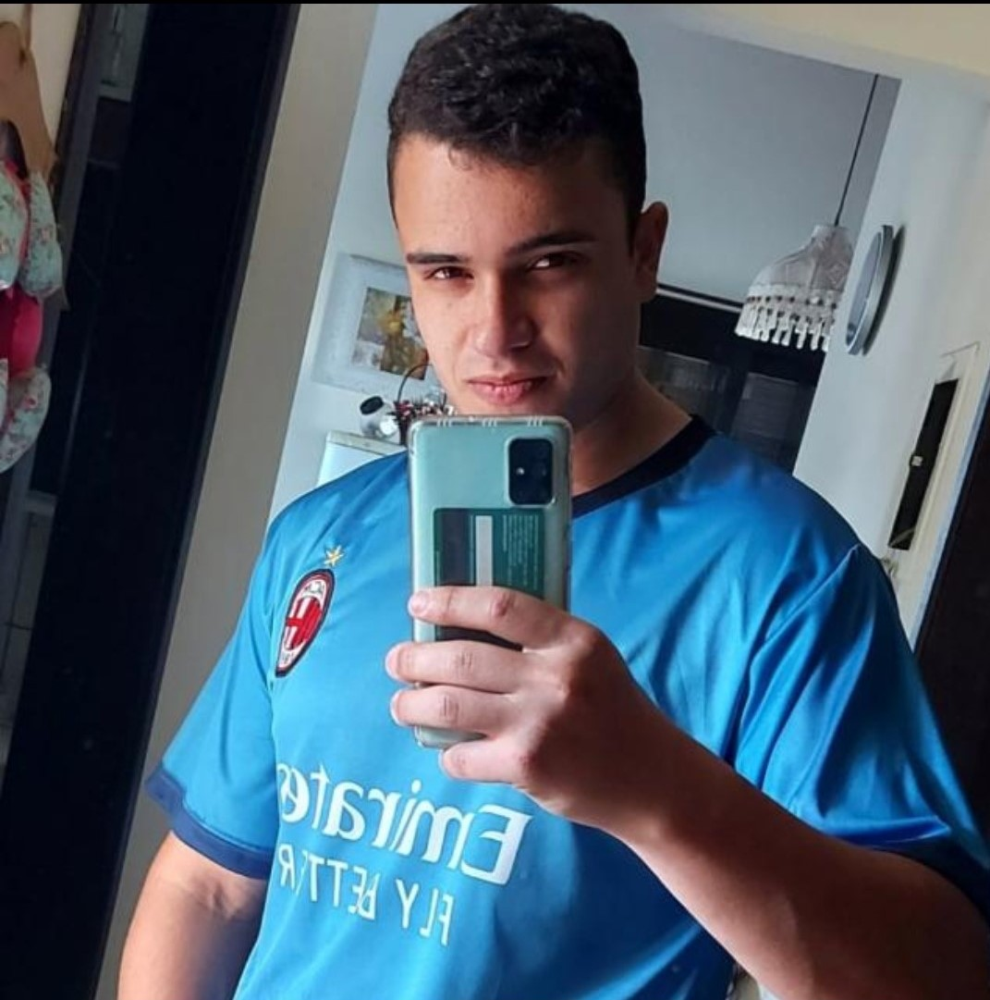

OBGETIVOS:
Meu nome é Ryan Renan Moura Kohn, tenho 20 anos, e estou cursando o primeiro semestre de Análise e Desenvolvimento de Sistemas, não tenho experiência na área. Tive interesse pela área pola alta demanda de trablho e por sempre gostar de tecnologia.
Formação:
Curso superior 2022|2025
Cursando primeito sementre do curso de ADS, com prefisão de termino do urso em 2025.
Curso tecnico 2016|2017
Curso básico de Introdução a Informática, Windows 8, Internet, Word, Power Point, Exserl. Cursei na uidada de encino Premium Educação Profissional, que tinha em Torres-RS.
Habilidades
CSS
HTML
C++
PYTHON
Personalidade
TRABALHAR EM EQUIPE
ESFORÇADO
COMUNICATIVO
Experiencia profissional
Bom preço / 2014 - 2015 - Empacotador de mercadorias
Foi uma boa esperiência, primeiro trabalho, tinha 14 anos.
JQ Pinturas / 2015 - 2022 - pintor
Esta sendo uma boa esperiência, ser elogiado a cada final de obra é a maior conquista que se pode ter.